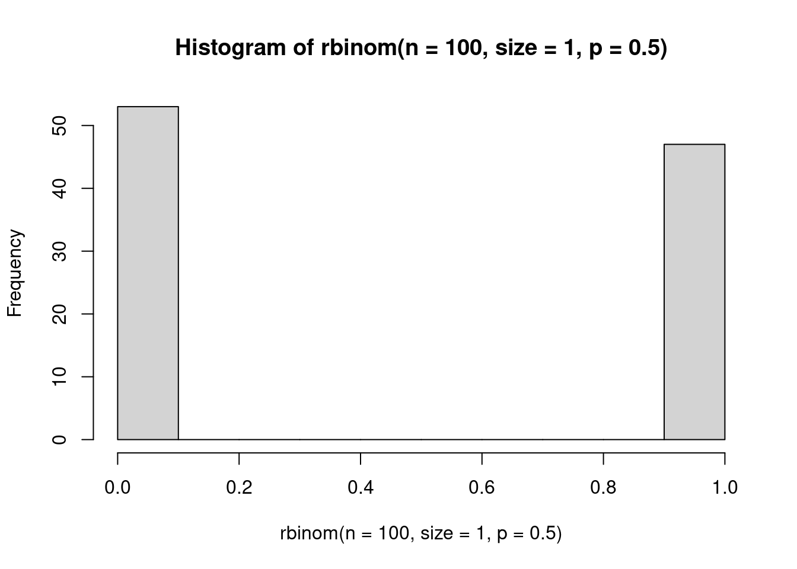
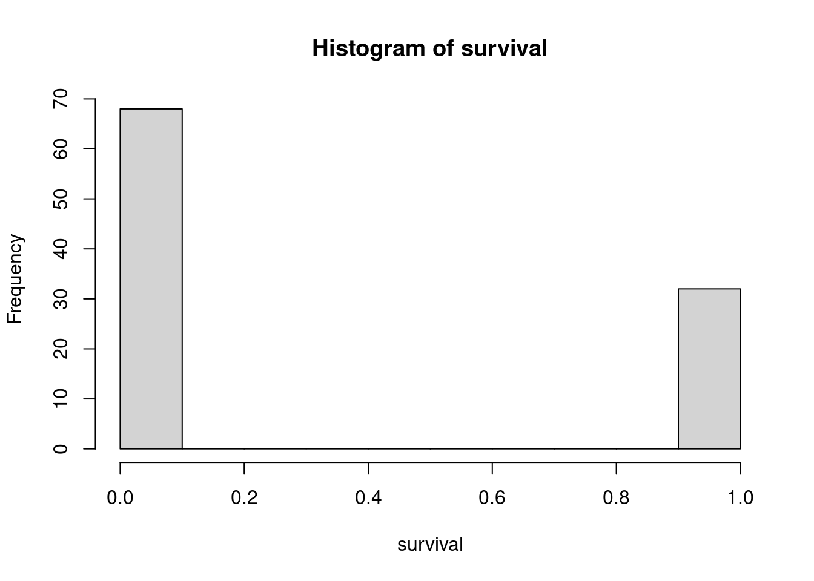
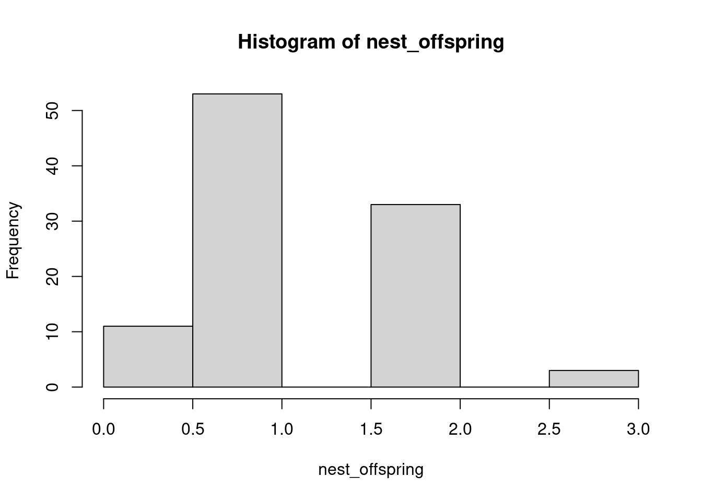
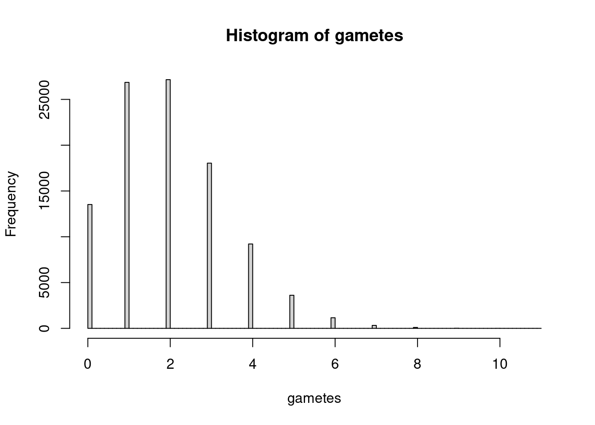
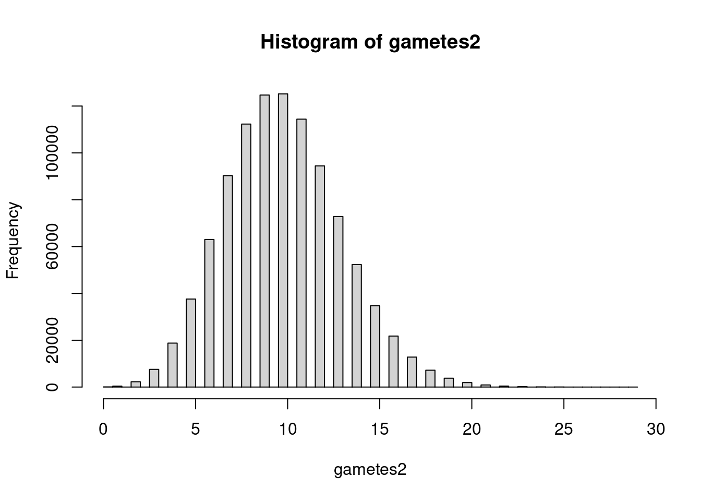
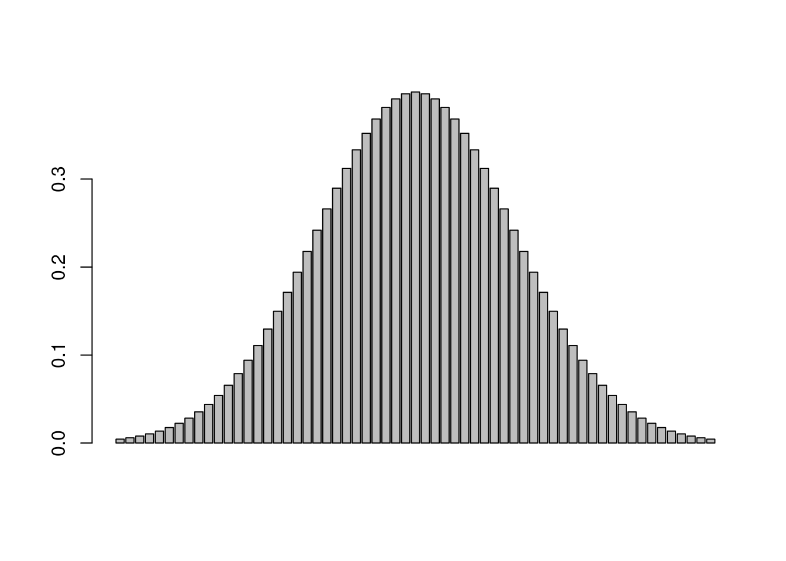

2 Probability
2.1 Bernoulli distribution
If you flip a coin, what is the probability that it lands up heads? There is a 0.50 probability, or 50% chance, of flipping heads. There is also a 0.5 probability that the outcome is tails. These two probabilities have to sum to 1 because there is no chance of any other outcome. Put another way, if \(p_h = 0.5\), then \(p_t = 1 - p_h = 0.5\), where \(p_h\) is probability of heads and \(p_t\) is probability of tails.
Now, instead of thinking about flipping a coin as a 50/50 shot at heads or tails, think about it only in terms of succeeding at flipping heads. Each successful attempt you get a ‘1’ for a success, and each time the coin is not heads, we call it a ‘0’ for failure. Put another way, we ask the question ‘Did we flip heads?’ and if the answer is TRUE, and we use a 1 to denote that. This is actually how R encodes TRUE (T = 1) and FALSE (F = 0).
We can use R to simulate a coin flip using the function rbinom().
# to leave notes to yourself in R scripts, start with a #
?rbinom # look up the Help file to find out about the arguments to the function
# rbinom wants:
# n, the number of observations / replicates
# size, the number of draws
# p the probability of success
# to simulate a single coin flip, we want to take one replicate (n=1) of
# one draw (size=1) from a binomial distribution with a probability of
# success (heads) of 0.5
rbinom(n=1, size=1, prob=0.5)## [1] 0# we could keep running this line over and over
# or we could increase n, the number of replicates
# this gives us a vector of 100 observations of a coin flip
rbinom(n=100, size=1, p=c(0.5))## [1] 0 0 0 1 1 1 1 0 0 1 0 0 0 0 0 0 1 1 0 1 0 1 0 0 0 1 0 0 0 1 0 1 0 0 0 1 1
## [38] 0 0 0 1 1 1 1 1 1 0 1 0 0 0 0 1 1 0 1 1 0 0 1 0 0 0 0 1 0 1 1 1 1 0 1 1 1
## [75] 0 0 1 0 1 1 1 0 0 0 1 1 0 1 1 1 1 0 0 0 1 0 1 1 1 0# to visualize the outcome, we can create a histogram plotting the results
# using the function hist()
hist(rbinom(n=100, size=1, p=0.5))
# because the function is drawing from a probability distribution, outcomes will
# be a little different every single time. If you need them to be the same, you
# can set the seed with set.seed(42), or any other number
The outcome we are observing, successfully flipping heads, is a random variable. A random variable is one that is drawn from a probability distribution (not in the colloquial sense of the word random). Our observed response (heads = TRUE) is drawn from a Bernoulli distribution with a probability of success of 0.5. We can write this mathematically as: \[heads \sim Bernoulli(p=0.5)\]
The Bernoulli distribution is a probability distribution that only yields success (1) or failure (0) based on the probability of success \(p\). The probability can vary depending on the process you are modeling, but the outcome will always be 0 or 1.
As an ecological example, let’s take guillemot chicks. Guillemots are seabirds that nest on steep cliffsides to escape predators. They spend most of their life on the ocean, however, and as such are very awkward on land and also not great at flying. To get from the cliffside nest to the ocean for the first time, guillemot chicks have to jump and then glide/fly. If they do not make it all the way, they can attempt to run, but are vulnerable to predation. The only option for chicks is to survive or fail - making it 70% of the way to the ocean will result in failure (and, in this case, death).
# let's assume chicks have a 40% chance of making it to the ocean, and there are
# 100 chicks jumping from the cliff hoping to make it to the ocean so we have
# 100 observations, each with one draw from the Bernoulli distribution
rbinom(n = 100, size=1, p=0.4)## [1] 1 0 0 1 1 0 0 0 1 1 1 0 0 0 1 0 0 1 1 1 0 1 0 0 1 1 0 1 1 0 1 1 0 1 0 1 0
## [38] 0 0 1 0 0 1 0 1 1 0 0 1 1 1 0 0 1 0 1 1 0 1 0 1 0 1 0 0 1 1 0 0 1 1 0 0 0
## [75] 0 0 0 1 0 0 0 0 1 0 0 0 0 1 0 0 0 1 0 1 0 1 1 1 0 1# so far, we have just been running functions and the output is shown in the console
# but we don't have anything in our environment
# can save to an object with the <- assignment operator
survival <- rbinom(n=100, size=1, p=0.4)
# we can then do things with that saved object, like plot it
hist(survival)
2.2 Binomial distribution
2.2.1 Guillemot example
Guillemots typically only lay 1-2 eggs, but for the sake of our example code, let’s pretend that each pair has 3 chicks that are attempting to make it to the ocean. Each individual chick’s attempt could be modeled with a Bernoulli distribution, but if we consider it from the perspective of the breeding pair, the total number of surviving offspring is what matters. We can think of the number of chicks from each nest that make it to the ocean as the sum of their individual attempts for a single nest. This is the Binomial distribution, which is a more generalized version of the Bernoulli distribution (more accurately, the Bernoulli distribution is a special case of the Binomial distribution with one draw) in which each observation has multiple draws.
## [1] 2# we could also think about a colony with let's say 100 nests
# how many chicks from each nest will make it?
nest_offspring <- rbinom(n=100, size=3, p=0.4)
hist(nest_offspring)
## [1] 1 2 1 1 2 1 1 2 1 1 2 1 2 1 1 1 2 2 1 1 1 0 3 2 1 3 1 2 2 1 0 1 2 3 3 2 2
## [38] 1 1 1 0 0 2 1 1 1 0 0 1 1 1 0 1 1 1 2 1 1 1 3 0 0 1 2 2 0 1 2 2 0 0 1 1 0
## [75] 1 0 0 2 2 1 2 1 0 2 1 1 3 1 2 1 1 3 0 2 0 0 1 0 1 1# what is the probability that all three chicks from a nest make it?
# because we know what we fixed p to, we could multiply the probabilities
0.4^3## [1] 0.064## [1] 0.216We are able to calculate what the probability of these outcomes are because we fixed the probability of success at 0.4 and then simulated outcomes. In the real world, we rarely know what the probability of success truly is, and instead we are working backwards from our observed outcomes (i.e. our data) to estimate the probability of survival. One of the beautiful things about working with simulated data is that we know the input value, so we can test assumptions, see if we recapture our input, and play around with different model structures and know that anything that is unexpected is most likely a problem with our code or model, not the data.
With discrete distributions like the Binomial, we can convert the frequency of outcomes to a proportion of the total as an estimate of probability. Dividing the frequencies by the total sample size makes it so that the total probability sums to 1.
# table is a function that tallies up all the items in a vector
# a vector is a type of object that is one dimension, i.e. nest_offspring is a
# vector with length = 100
table(nest_offspring)## nest_offspring
## 0 1 2 3
## 20 48 25 7# proportions will convert the table into proportions instead of counts
# so will prop.table and I often use that function because I learned it first
# there are many different ways to accomplish the same goal in R
survival_prob <- proportions(table(nest_offspring))
# How do these values compare to the calculated probability of all three chicks
# surviving? What about of none surviving?
# With the values calculated from the simulated data (i.e. not the parameter
# value that we fixed), what is the probability that *at least* one chick
# from a nest survives?
0.47 + 0.27 + 0.06 # note: numbers might be different because we didn't set.seed()## [1] 0.8In general with coding, you want to avoid hard coding like this where you put in fixed values. It is much better to use code that is flexible if the input data changes (e.g. we are using a randomly generated dataset, so it will change every time), or if you want to change some parameter across a lot of different parts of the code. For example, instead of repeatedly typing p=0.4, we could have created an object in our environment with the probability of success such as p.surv <- 0.4 and then specifying p=p.surv throughout the script, which would make it really easy to change the simulations for a new scenario (e.g. if the guillemot chicks were given little hang-gliders, we might increase p.surv and would only have to type it out once as p.surv <- 0.8.
Subsetting vectors in R is a really useful tool when you want to apply a function to only part of a vector, inspect part of an object, etc. We use the square brackets [] for subsetting, and within them specify which elements to return. The elements to return can be a numeric vector (e.g. c(1,2,4)) to return the first, second, and fourth elements, or a logical vector indicating if an element should or should not be returned (e.g. c(TRUE TRUE FALSE TRUE)). If subsetting a range of consecutive elements, the : operator can also be used (e.g. 1:4 is the same as c(1,2,3,4)).
# To avoid hard coding our estimated percent, we can use sum() on a subset of
# the table of proportions to estimate the probability at least one survives?
sum(survival_prob[2:4])## [1] 0.8## [1] 0.32# side note: if you're not sure which indices to subset, it can help to look at
# your object; you can easily do this in RStudio by highlighting just the bit of
# code with your object name and using Ctrl + Enter (or Cmd + Enter) to print
# just that object to the console, i.e. if you highlight part of a line, you will
# only run the highlighted bit, not the entire line2.2.2 Coral example
With the guillemots, we were assuming that each pair had three potential offspring surviving. What happens if we vastly increase the number of draws from the binomial distribution? Take corals as an example. Some broadcast spawning corals have mass synchronized spawning events where individual corals on a reef all release bundles of sperm and eggs at the same time. The reproductive success of each individual coral can still be modeled as a binomial distribution, i.e. how many of those released sperm and eggs will actually encounter a bundle of the same species and be a successful mating attempt is a random variable drawn from a Binomial distribution with a number of draws \(N\) equal to the number of released sperm and eggs and a probability of success \(p\) for each of those. \[ offspring \sim Binomial(N, p)\].
Note: the \(N\) for denoting the number of draws from the Binomial is distinct from the n = argument in the rbinom() function. Don’t let this confuse you! \(N\) equates to the size = argument, while n = is the number of observations of the random variable, i.e. the total number of individual corals on the reef.
# let's assume now the coral reef has 100,00 individual corals (I have no
# clue if this is an accurate number, but let's roll with it)
# let's also assume each individual coral releases 10,000 sperm and eggs
# and the probability for each of those resulting in a successful mating event
# 0.0002 (i.e. 0.002%)
gametes <- rbinom(n=100000, size=10000, p=0.0002)
hist(gametes, breaks = 100)
## gametes
## 0 1 2 3 4 5 6 7 8 9
## 0.13492 0.26917 0.27091 0.18123 0.09142 0.03590 0.01206 0.00343 0.00073 0.00021
## 11
## 0.00002##
## FALSE TRUE
## 0.98355 0.01645# now let's increase the number of individual corals to 1 million, and also increase
# the probability of success to 0.001
gametes2 <- rbinom(n=1000000, size=10000, p=0.001)
hist(gametes2, breaks=100)
##
## FALSE TRUE
## 0.99996 0.00004##
## FALSE TRUE
## 0.951293 0.048707# let's visualize the data as a histogram again, but add a vertical bar using
# the abline() function at 15; note there are other plotting options to make
# your plots slightly more aesthetic
hist(gametes2,
breaks=100,
border=F, # i just don't like borders on bars
col="turquoise4",
main="", # removes the 'title'
xlab="Number of successful mating attempts", # changes x axis label
las=1 # rotates the axis labels the right way
)
abline(v=15,
lwd=2, # width of line
col="tomato2")
2.3 Probability mass
In the example above, you can see that there is very low probability of being in the tails of the distribution. So far, we have only been thinking about discrete distributions where the outcome will fall into a ‘bin’ of some kind. With the Bernoulli distribution, the outcome could only be 0 or 1. With the Binomial distribution, the outcome could only be an integer, including zero, and can only be positive. There are no numbers in between; you either make it to the ocean, or you don’t, and you never end up with 1.5 surviving offspring.
Discrete distributions have a probability mass function, which you can think of as the amount of probability associated with each bar in the histogram (including potential ‘bars’ that are never observed and their probability mass is 0).

2.4 The Normal (Gaussian) distribution
In contrast to discrete distributions, continuous distributions can return any number value (within some constraints, which we will get to later in the semester when we talk about generalized linear models or GLMs). For now, we will just focus on the normal distribution which is one that is likely most familiar. The normal distribution is continuous and can return any value from \(-\infty\) to \(+\infty\). There are two parameters that govern the normal distribution: 1) the mean of the distribution, \(\mu\) and the variance, \(\sigma^2\). If we have a response variable \(y\) that is a random variable drawn from the normal distribution, we would write this out as: \[y \sim Normal(\mu, \sigma^2)\]
The mean (\(\mu\)) is the central tendency of the distribution; you could also think of it as the expected value. The variance (\(\sigma\)) is a measure of spread, i.e. how tightly are values clustered to that central tendency versus more spread out.
2.4.1 Guillemot weight
Apparently, adult Common Guillemots weigh 900-1100 grams (about 2-2.5 lbs). Because guillemot weights can be any number (e.g. 929.374 grams), we could assume that our response variable (weight) is a random variable drawn from a normal distribution. Ballpark, let’s say that the mean is 980, and the variance is 400. In R, instead of using the variance directly, the function rnorm() takes the standard deviation (\(\sigma\)) as input. The standard deviation is simply the square root of the variance. So we can describe guillemot weight mathematically as: \[ weight \sim Normal(\mu = 980, \sigma=20)\]
Using the function rnorm, we will simulate a population of 120 adult guillemots and their weights.
adult_weights <- rnorm(n = 120, # population size
mean = 980, # mu, population mean
sd = 20 #standard deviation, square root of the variance
)
# plot a histogram of our sample
hist(adult_weights, breaks = 20)
# add a vertical line where we set the mean to
# note: if running these in an R Markdown file, you have to run both lines
# at the same time or you will get an error that plot.new has not been called
abline(v = 980,
lwd=2,
col="red")# based on the sample, what is the probability of an adult guillemot weighing
# more than 980 grams?
proportions(table(adult_weights>980))##
## FALSE TRUE
## 0.525 0.475# what is the probability of an adult weighing exactly 990 grams? (not 990.1, 990.2, etc.)
# we could do this empirically, i.e. how many of our 120 adults were exactly 990 grams?
proportions(table(adult_weights==990))##
## FALSE
## 12.5 Probability density
Because we are dealing with a continuous distribution, there are no finite points along the distribution that can have a probability associated with them. Instead, we need to think back to calculus and consider the probability of any given value as an integral.
Imagine that you have a curve, and the area under the curve represents a probability, so it must sum to 1 (i.e. all possible outcomes must be represented). Picture a set of discrete bars underneath that distribution, each representing some portion of the total probability, like we did with the discrete distributions. We will use the function dnorm() for this, which is the density (d for density) of a normal distribution at a vector of values, rather than random draws (r for random). To create our vector of values, we will use the seq() function, which generates a sequence of numbers.

Now imagine that we make each bin smaller, and smaller, and smaller by changing the increments in our sequence (i.e. we make more bins).


As the size of our bins approaches zero, the number of bins approaches infinity. This is essentially what we are doing with an integral. With a continuous distribution, we now have probability density functions, rather than probability mass.

To get back to our original question of the probability of an adult guillemot weighing exactly 990 grams (still a silly question), we can use the dnorm() function to get the probability density at that value.
## [1] 0.01760327What we are likely more interested in, however, is the probability of an adult weighing at least 990 grams. For that, we need the pnorm() function which returns the cumulative density of the normal distribution at a given quantile (for now, think of the quantile as just the cutoff point in adult weights that we are interested in).
# what is the probability of observing an adult guillemot that weighs at least 990 grams?
pnorm(q = 990, mean = 980, sd = 20,
lower.tail=F # we need to specify that we are in the upper tail
)## [1] 0.3085375## [1] 0.1586553## [1] 0.02275013As we get into the tails of the distribution, the probability of observing an adult guillemot that is at least that heavy, or heavier, gets increasingly less likely. This brings us to the definition of the p-value: the probability of observing your data, or data more extreme, if the null is true. In our case, we are treating the null hypothesis as being that guillemot weights are drawn from a normal distribution with a mean of 980 and standard deviation of 20. What if instead we our null hypothesis was that the mean was still 980, but that there was a lot more variability in nature, and the standard deviation was 30? The probability of an adult guillemot weighing that much is now much higher (9.1%, as opposed to 0.02%) because there is more spread around the central tendency.
## [1] 0.091211222.6 The Standard Normal Distribution
In the real world, we typically do not know what the parameters are underlying our distribution (i.e. we would have know way of knowing what the mean and standard deviation of guillemot weight are). We also often work with data that are normally distributed, but could not have negative values. Remember that the support of the normal distribution is all numbers from \(-\infty\) to \(+\infty\). Adult guillemots, however, cannot have negative weight. Thus, we first need to centralize and standardize the data so that we know what the mean and standard deviation are.
Centralizing data means we subtract the mean value of our sample from every single observation, such that we are left with a mean value of 0. Standardizing data is a way of transforming it so that variables are more comparable across different data sources, and also so that we can easily compare standard deviations. To standardize data, we convert it to Z-scores. For each observation \(x\), we subtract the mean \(\bar{x}\) and then divide that value by the standard deviation \(\sigma\). The equations to do this for a sample are below; \(SS\) stands for the sum of squared residuals. Note that we divide the sum of squares by n-1, rather than n, because we are dealing with a sample rather than population. The degrees of freedom is the number of observations we have, but we lost one degree of freedom when we calculated the sample mean \(\bar{x}\). \[Z = (x -\bar{x})/\sigma\] \[\sigma = \sqrt{\sigma^2}\] \[\sigma^2 = \frac{SS}{(n-1)}\] \[SS = \sum_{i=1}^{n}(x_i - \bar{x})^2\]
2.6.1 Functions
To standardize our data we need to center it (subtract the mean) and standardize (Z transform) the data. We will create functions in R to do this for us quickly. There are many inbuilt functions in R, such as the ones we have been using already (e.g. rnorm, hist, sum, etc.) and you can also install packages that contain functions which other people have written. You can also write your own custom functions. This is extremely useful when you want to repeat an operation many times without using up many lines of code (the more lines of code, the more likely you are to end up with an error, or something difficult to fix later on).
First, we will create a function that calculates just the sum of the squared residuals. To create a function, we need to name it just like an object, but pass to it a function() containing arguments that the function accepts. In this case, it is a function that will take a vector x. Inside the {} brackets we place the instructions for what to do with x and what to return from the function. Only the object that is specified will be returned (i.e. xbar, res, and squares will not be saved to your environment, only ss).
sum_squares <- function(x){
xbar <- mean(x) # mean of the sample
res <- x - xbar # residuals
squares <- res^2 # squared residuals
ss <- sum(squares) # sum of the squared residuals
return(ss) # what should the function return
}We can also nest functions inside other functions, which can make it a lot easier to keep your code neat and tidy. Below is a function to standardize data which uses the other function we just created.
standardize <- function(x){
xbar <- mean(x)
n <- length(x)
ss <- sum_squares(x) # note we call our function from earlier
s2 <- ss/(n - 1) # variance = sum of squares divided by n - 1
s <- sqrt(s2) # calculate standard deviation from variance
z <- (x - xbar)/s
return(z)
}
# use this function to standardize adult guillemot weights that we generated
# earlier and plot the output. how does it differ from the original?
std_weights <- standardize(adult_weights)
hist(std_weights)
# Note that we now have negative weights, however, the interpretation is simply
# that these individuals are below the mean, and positive values are above itOne of the nice things about the standard normal distribution is that we know that the mean is 0 and the standard deviation is 1. This means that now, when we ask about the probability of observing an adult guillemot with a standardized weight of some value or higher and our null is 0, we are asking if that individual significantly differs from the sample mean. We also know the standard deviations, and instead of having to calculate the integral at different cutoffs, this has already been done. Prior to advances in modern computing, this was done manually, and there were huge lookup tables at the back up statistics textbooks that would tell you the p-value associated with different z-scores. Thankfully, now we have R.

Recap
- Random variables can be described with a probability distribution function.
- A Bernoulli random variable can be written as \(y \sim Bern(p)\) where \(p\) is the probability of success. Only 0 or 1 are possible outcomes.
- The Bernoulli is a special case of the Binomial distribution with a single draw. A Binomial random variable can be written as \(y \sim Bin(N, p)\) where \(N\) is the number of trials.
- Discrete distributions like the Bernoulli and Binomial have probability mass associated with each potential value and those probabilities must sum to 1.
- Continuous distributions like the Normal (Gaussian) have probability density associated with each potential value and the area under the curve sums to 1.
- If we know the probability distribution function, or even if we have empirical data, we can estimate the probability of observing a value, or of observing a value at least that extreme.